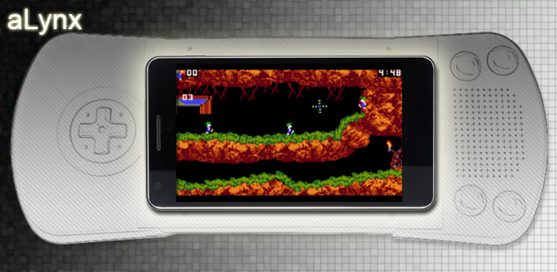
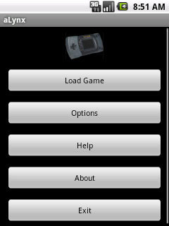
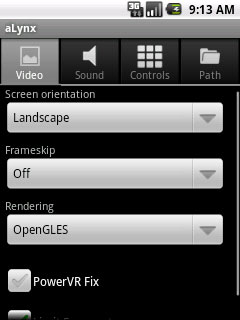
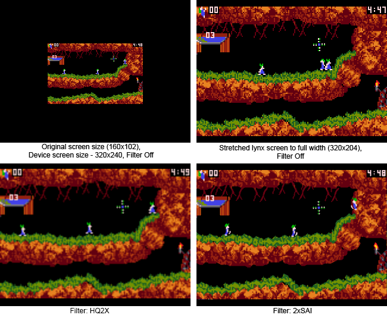
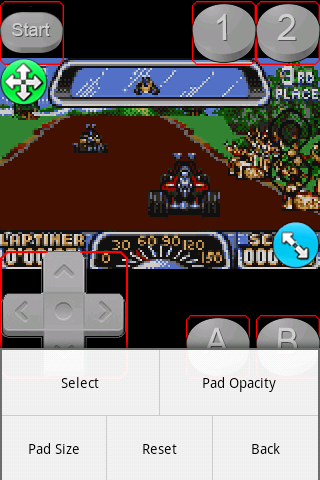

Index:
1. About aLynx
2. Main Menu
3. Options
3.1 Video
3.2 Audio
3.3 Controls
3.4 Path
4. FAQ
5. Changelog
1. About aLynx:
aLynx - is a Atari Lynx emulator for Android OS 2.1 and higher. aLynx supports on-screen keyboard, sound output, OpenGL rendering, load/save games states.
aLynx based on a Handy 0.95 by Keith Wilkins.
Autor: rock88
e-mail: rock88a@gmail.com
Web: rock88dev.blogspot.com
2. Main Menu:

3. Options:

3.1 Video:
Screen orientation - Set screen orientation in game (Portrait or Landscape);
Frameskip - Set frame skip count, before drawing (Off, 1,2,..,9);
Rendering - Set Render mode, for image drawing. Values:
Software - A simple video output, when stretching the picture becomes a pixelate. You can improve the image using the Filters;
OpenGL - For output video used OpenGL. When stretch the image is smoothed, but the weak GPU can be slow work;
OpenGL Native - For video output used OpenGL, executed from Native part, writen in "C". More performance in comparison with the normal "OpenGL" mode;
Filter(Only for Software Rendering) - Enable filters to improve image. Filter Preview:

3.2 Audio:
Enable Sound - Enable/Disable sound output;
Sample Size (bytes) - Size array for sound output (1024, 2048, 4096);
3.3 Controls:
Set on-Screen Pad (Portrait) - Setup on-screen pad position for portrait screen orientation;
Set on-Screen Pad (Landscape) - Setup on-screen pad position for landscape screen orientation;
Configure Hardware Keys - Binding hardware keys to console keys;
Show/Hide on-Screen Buttons - Show/Hide on-Screen buttons;
Vibrate on Keypress - Enable/Disable vibration on press on-Screen buttons;
3.4 Path:
BIOS Path - Path to a Lynx BIOS file, without it, the game will not run;
Default Rom Path - Default path to open with "Load Game" button, if not set, opening "/";
Default Save States Path - Default path for game states, if not set - saving with rom;
Q: Where can I get the BIOS file?
A: Just look for it on the Internet, on the name of "lynxboot.img".
Q: How do I set up on-screen buttons?
A: You can do this in Options->Controls->Set on-Screen Pad (Portrait/Landscape)

Select - Choose a screen or button to move them (the screen can also be stretched). Tips: So is it possible to do the buttons Volume + / -;
Pad Opacity - Set opacity for on-screen buttons;
Pad Size - Set on-screen buttons size (1x,1.5x,2x). Only for 320x480 screens and more;
Reset - Reset position on-screen buttons and screen;
Stretch Image (Only for Landscape mode) - Stretch screen image (Full Screen, Full Screen with Borders).
5. Changelog:
21/04/12 v1.0 - First release on a Google Play
29/04/12 v1.01 -
Homebrew rom support;
Support for pressing diagonal on a d-pad;
2x size of the pads (for 480x800 screens and more);
19/05/12 v1.02 -
Rewritten core using a source code Handy 0.95;
Fixed control (You can hold your finger on a D-Pad and move it);
Remove all filters and added HQ2X and 2xSAI;
Many bug fixes;
Added mips CPU support;
23/05/12 v1.03 -
1.5x size of the pads (for 320x480 screens and more);
Fixed various bugs;
26/05/12 v1.031 -
Fixed "pointerIndex out of range";
31/05/12 v1.032 -
Fixed bug with Multitouch;
Added BT gamepad support.